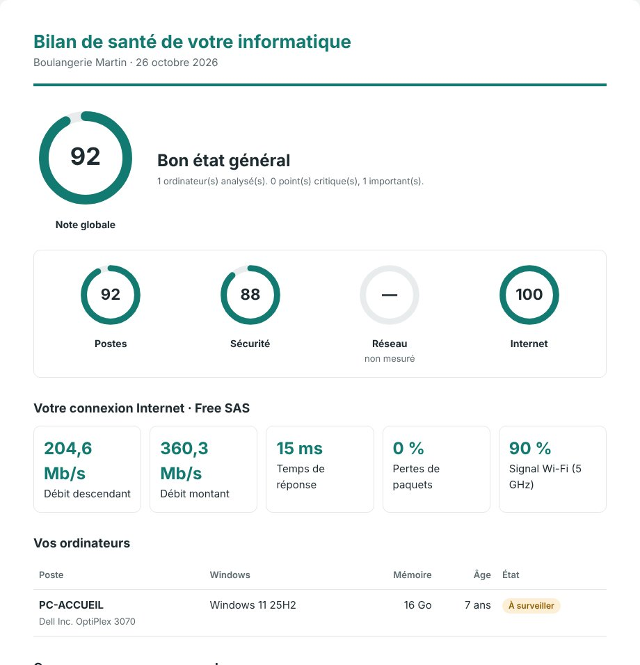

Un bilan de santé de PC vérifie le système (version et fin de support de Windows, mises à jour), le matériel (disque, mémoire, âge), la sécurité (antivirus, pare-feu, BitLocker, compte administrateur au quotidien) et le confort (démarrage chargé). En PowerShell, tout se lit sans rien modifier, en quelques minutes.
Avant de chiffrer une intervention ou de proposer un contrat, il faut savoir où en est le poste. Le faire à la main, c'est ouvrir dix fenêtres et recopier des informations. Un script PowerShell en lecture seule lit tout d'un coup et produit un rapport que le client comprend.
Les points à vérifier
| Domaine | Ce qu'on regarde |
|---|---|
| Système | Édition et version de Windows, date de fin de support (Windows 10 n'est plus maintenu depuis le 14 octobre 2025, sauf mises à jour de sécurité étendues), mises à jour en attente, dernier redémarrage. |
| Matériel | Âge de la machine, mémoire installée, espace libre et état des disques (SMART, avec les droits administrateur), type de disque. |
| Sécurité | Antivirus actif et à jour, pare-feu, chiffrement BitLocker sur les portables, utilisateur administrateur au quotidien, SMBv1 activé, Bureau à distance ouvert. |
| Confort | Programmes lancés au démarrage, signes de lenteur. |
Une note sur 100 qui ne ment pas
Le client retient un chiffre. Pour qu'il soit honnête : un point critique (pas d'antivirus, disque en fin de vie) plafonne la note, et un domaine non mesuré n'est pas noté plutôt que de recevoir 100 par défaut.
Lecture seule, sans module
Un bilan ne doit rien modifier. PowerShell 5.1, présent sur tous les Windows 10 et 11, suffit : les informations viennent de CIM/WMI, du registre et des cmdlets intégrées. Sans droits administrateur, on obtient l'essentiel ; avec, on ajoute BitLocker, l'état SMART et SMBv1.

Questions fréquentes
Faut-il être administrateur pour faire le bilan d'un PC ?
Non pour l'essentiel. Les droits administrateur ajoutent l'état SMART des disques, le chiffrement BitLocker et la vérification de SMBv1.
Un script de bilan peut-il casser quelque chose ?
Un script de bilan bien conçu est en lecture seule : il lit des informations et écrit seulement son rapport. Vérifiez qu'il ne contient aucune commande de modification avant de le lancer chez un client.
Combien de temps prend le bilan d'un PC ?
Environ deux minutes par poste avec un script, contre une demi-heure ou plus à la main.
Essayez gratuitement : le Bilan express fait le bilan d'un PC en deux minutes, en lecture seule, avec ce rapport noté sur 100. Le Pack TPE l'étend à tout le parc, au réseau et au serveur.
Télécharger le Bilan express Voir le Pack TPE